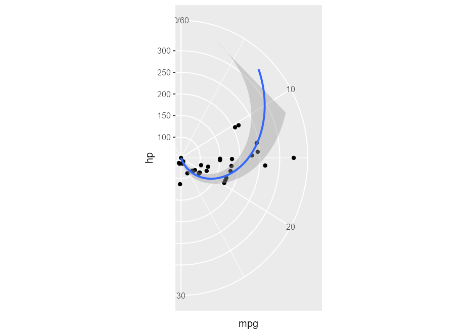

Installation
You can install the development version from GitHub with:
# install.packages("remotes")
remotes::install_github("yjunechoe/ggtrace")
library(ggtrace) # v0.5.3.9000More on the üì¶ package website: https://yjunechoe.github.io/ggtrace
Description
ggtrace embodies an opinionated approach to learning about ggplot internals. The internals is a difficult topic, so I recommend watching the following presentations on ggtrace before getting started on any kind of code:
Read more about the philosophy behind ggtrace in the Getting Started vignette, and see examples in the Overview vignette.
Example usage
library(ggplot2)
packageVersion("ggplot2")
#> [1] '3.4.0'1) Remove boxplot outliers from data (vs. just hiding it visually)
You can hide outliers in geom_boxplot(), but they’ll still be in the layer’s underlying dataframe representation. This makes the plot look stretched:
boxplot_plot <- ggplot(mpg, aes(hwy, class)) +
geom_boxplot(outlier.shape = NA)
boxplot_plot
This is because the scales are re-trained after the calculation of the boxplot statistics. In other words, the “final” min/max value of the x-scale are derived from the calculated outliers, even if they’re not drawn.
layer_data(boxplot_plot)[, c("xmin", "xmax", "outliers", "xmin_final", "xmax_final")]
#> xmin xmax outliers xmin_final xmax_final
#> 1 23 26 23 26
#> 2 23 33 35, 37, 35, 44 23 44
#> 3 23 32 23 32
#> 4 21 24 17 17 24
#> 5 15 20 12, 12, 12, 22 12 22
#> 6 20 36 44, 41 20 44
#> 7 14 22 12, 12, 25, 24, 27, 25, 26, 23 12 27One solution is to highjack the calculation of the boxplot layer’s statistics such that values of the outliers column is set to NULL. In ggtrace_highjack_return(), we pass an expression that modifies returnValue() to the value argument, which evaluates to the value about to be returned by the method.
ggtrace_highjack_return(
x = boxplot_plot,
method = Stat$compute_layer,
cond = 1L,
value = quote({
transform(returnValue(), outliers = NULL)
})
)
Problem inspired by https://github.com/tidyverse/ggplot2/issues/4892.
2) Crop polar coordinate plots
Plot in polar coordinates:
polar_plot <- ggplot(mtcars, aes(hp, mpg)) +
geom_point() +
geom_smooth(method = "lm", formula = y ~ x) +
expand_limits(y = c(0, 60)) +
coord_polar(start = 0, theta = "y")
polar_plot
Clipping the plot panel with ggtrace by highjacking the Layout$render() method:
ggtrace::with_ggtrace(
x = polar_plot + theme(aspect.ratio = 1/.48),
method = Layout$render,
trace_steps = 5L,
trace_expr = quote({
panels[[1]] <- editGrob(panels[[1]], vp = viewport(xscale = c(0.48, 1)))
}),
out = "g"
)
See implementation in MSBMisc::crop_coord_polar().
3) Highjack the drawing context
Flashy example adopted from my UseR! talk:
library(palmerpenguins)
p <- na.omit(palmerpenguins::penguins) |>
ggplot(aes(x = species, y = flipper_length_mm)) +
geom_boxplot(aes(fill = species), width = .7) +
facet_wrap(~ year)
ggtrace_highjack_return(
p, Geom$draw_panel, cond = TRUE,
value = quote({
y_pos <- .25 * ._counter_
grobTree( circleGrob(y = y_pos, gp = gpar(fill = linearGradient())), # R >= 4.1
editGrob(returnValue(), vp = viewport(clip = circleGrob(y = y_pos))) )
}))